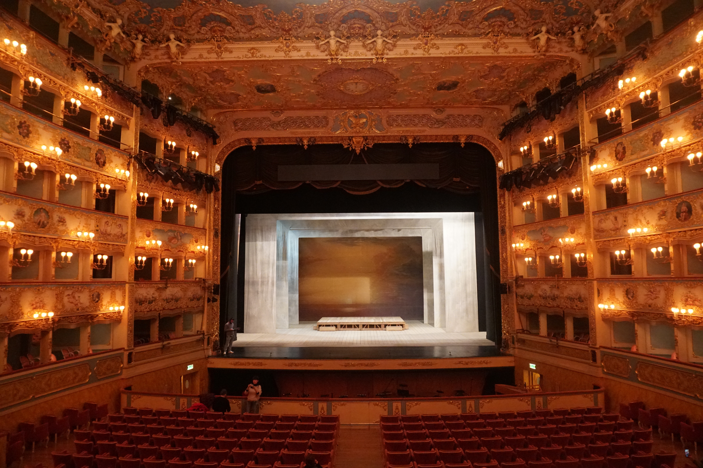

L’orfe del Clan dels Zhao
Escrit per Ji Juxiang
Basada en una obra clásica china, cuenta la historia de un huérfano que vengará la muerte de su familia. El clan Zhao al completo es exterminado en una matanza. La propia reina lleva en su vientre un Zhao y el mismo día de la masacre da a luz. Cheng Ying, un médico - sanador, la asiste en el parto y sacrifica a su propio hijo acabado de nacer para salvar al último miembro de la dinastía. Zhao Wu, con la ayuda del doctor, buscará vengarse de la familia rival y de los asesinos cuando crezca y descubra la implacable verdad de su infancia emprendiendo un épico viaje de sacrificio y venganza.
INFORMACIÓ 3 de Novembre de 2021
Teatre de Barcelona